PROJECTS
ABOUT
FIELD
RESEARCH

[1] Azoulay, Ariella Aïsha.
Civil imagination: A political ontology of photography.
(Verso Books, 2024. 5)
[2] Bennett, Jill.
Empathic Vision: Affect, Trauma, and Contemporary Art.
(Stanford University Press, 2005)